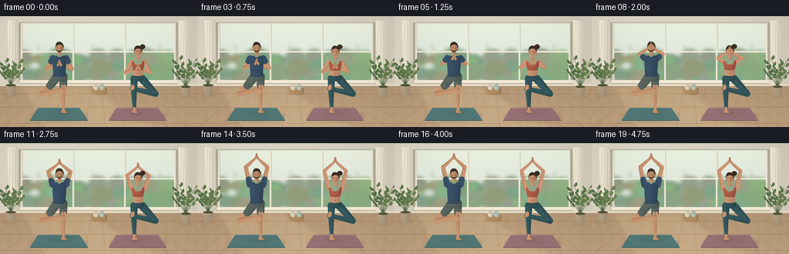
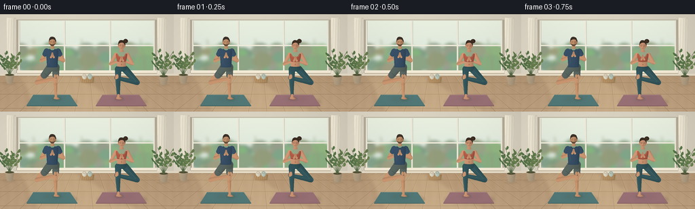

CODING AGENTS AS PIXEL WORLD MODELS
traex/GPT-6.1-Sol · instance_preservation_0030
点击播放 · 原生 RGB 像素
逐轮保存的候选
回放视频、检查图与代码变化。
每份候选均可单独播放。实际图片检查记录在下方工具轨迹中。
候选 01播放与检查图
点击播放 · 原生 RGB 像素


展开代码变化
--- 上一保存版本
+++ 本次保存版本
@@ -0,0 +1,356 @@
+"""Generate a quiet, sunlit yoga practice using only procedural RGB drawing."""
+from pathlib import Path
+import math
+import numpy as np
+from PIL import Image, ImageDraw, ImageFilter
+from artifact_io import save
+
+ROOT = Path(__file__).resolve().parent
+W,H,S = 256,144,4
+SIZE=(W*S,H*S)
+rng=np.random.default_rng(19)
+YY,XX=np.mgrid[0:H*S,0:W*S].astype(np.float32)
+XX/=S; YY/=S
+GRAIN=rng.normal(0,0.6,(H*S,W*S)).astype(np.float32)
+
+def points(ps): return [(int(round(x*S)),int(round(y*S))) for x,y in ps]
+def line(im,ps,col,width=1):
+ ImageDraw.Draw(im).line(points(ps),fill=col,width=max(1,round(width*S)),joint='curve')
+def ellipse(im,box,col):
+ ImageDraw.Draw(im).ellipse(tuple(round(v*S) for v in box),fill=col)
+def polygon(im,ps,col): ImageDraw.Draw(im).polygon(points(ps),fill=col)
+def rect(im,box,col): ImageDraw.Draw(im).rectangle(tuple(round(v*S) for v in box),fill=col)
+
+def curve(ps,steps=18):
+ """Cubic curves: first point followed by successive groups of three."""
+ out=[ps[0]]; p0=np.array(ps[0],float)
+ for i in range(1,len(ps),3):
+ p1,p2,p3=[np.array(p,float) for p in ps[i:i+3]]
+ for u in np.linspace(0,1,steps)[1:]:
+ out.append(tuple((1-u)**3*p0+3*(1-u)**2*u*p1+3*(1-u)*u*u*p2+u**3*p3))
+ p0=p3
+ return out
+
+def path(im,ps,col): polygon(im,curve(ps),col)
+
+def shade(im, mask, color, strength=.18, axis=None):
+ bbox=mask.getbbox()
+ if not bbox: return
+ x0,y0,x1,y1=bbox
+ xs=XX[y0:y1,x0:x1]; ys=YY[y0:y1,x0:x1]
+ if axis is None:
+ u=(xs-x0/S)/max((x1-x0)/S,1)
+ factor=1.05-strength*u+0.045*np.sin(u*np.pi)
+ factor-=0.03*(ys-y0/S)/max((y1-y0)/S,1)
+ else:
+ a,b,r=axis
+ dx,dy=b[0]-a[0],b[1]-a[1]; length=math.hypot(dx,dy)
+ # Cylindrical volume; illumination from upper left.
+ perp=((xs-a[0])*dy-(ys-a[1])*dx)/max(length,0.01)/r
+ u=np.clip(perp,-1,1)
+ factor=.88+.16*np.sqrt(np.maximum(0,1-u*u))-.065*u
+ c=np.array(color,dtype=np.float32)
+ pix=np.clip(factor[...,None]*c+GRAIN[y0:y1,x0:x1,None]*.6,0,255).astype(np.uint8)
+ lay=Image.fromarray(pix,'RGB')
+ im.paste(lay,(x0,y0),mask.crop(bbox))
+
+def body(im,ps,color):
+ m=Image.new('L',SIZE); path(m,ps,255); shade(im,m,color)
+
+def ball(im,box,color):
+ m=Image.new('L',SIZE); ellipse(m,box,255); shade(im,m,color)
+
+def limb(im,ps,radii,color):
+ # Anatomical tapered capsules, with subpixel antialiasing after compositing.
+ for i in range(len(ps)-1):
+ a,b=ps[i],ps[i+1]; ra,rb=radii[i],radii[i+1]
+ dx,dy=b[0]-a[0],b[1]-a[1]; ll=math.hypot(dx,dy)
+ nx,ny=-dy/ll,dx/ll
+ m=Image.new('L',SIZE)
+ polygon(m,[(a[0]+nx*ra,a[1]+ny*ra),(b[0]+nx*rb,b[1]+ny*rb),
+ (b[0]-nx*rb,b[1]-ny*rb),(a[0]-nx*ra,a[1]-ny*ra)],255)
+ ellipse(m,(a[0]-ra,a[1]-ra,a[0]+ra,a[1]+ra),255)
+ ellipse(m,(b[0]-rb,b[1]-rb,b[0]+rb,b[1]+rb),255)
+ shade(im,m,color,axis=(a,b,max(ra,rb)))
+
+def shadow(im,box,opacity=40,blur=2):
+ m=Image.new('L',SIZE); ellipse(m,box,opacity)
+ m=m.filter(ImageFilter.GaussianBlur(blur*S))
+ im.paste(Image.new('RGB',SIZE,(61,51,39)),(0,0),m)
+
+# Architecture, outdoors and floor stay fixed, without flicker.
+def background():
+ wall=np.zeros((H*S,W*S,3),np.float32)
+ base=np.array([220,212,195],np.float32)
+ light=6*np.exp(-((XX-81)/125)**2-((YY-35)/100)**2)-.028*XX
+ wall[:]=base+light[...,None]+GRAIN[...,None]*.65
+ im=Image.fromarray(np.clip(wall,0,255).astype(np.uint8))
+ # Plaster side pilasters and a recessed, wide garden window.
+ rect(im,(24,8,231,87),(180,171,151))
+ rect(im,(27,9,228,83),(231,236,218))
+ out=Image.new('RGB',SIZE,(223,233,211))
+ sky=np.empty((H*S,W*S,3),dtype=np.float32)
+ sky[:]=np.array([218,230,220])+np.clip((64-YY)/50,0,1)[...,None]*np.array([18,12,6])
+ out=Image.fromarray(np.clip(sky,0,255).astype(np.uint8))
+ for k in range(90):
+ x=rng.uniform(22,232); y=rng.uniform(51,92); r=rng.uniform(5,17)
+ c=(int(rng.uniform(126,161)),int(rng.uniform(155,183)),int(rng.uniform(122,146)))
+ ellipse(out,(x-r,y-r*.8,x+r,y+r*.8),c)
+ # Thin branches beyond the glass; soft focus separates them from the people.
+ for x in (49,120,207):
+ line(out,[(x+7,87),(x+4,60),(x,37)],(153,155,126),1.0)
+ line(out,[(x+4,64),(x-8,51)],(160,160,128),.7)
+ out=out.filter(ImageFilter.GaussianBlur(2.2*S))
+ im.paste(out.crop((27*S,10*S,228*S,83*S)),(27*S,10*S))
+ # Warm-white painted mullions.
+ for x in (27,94,161,226):
+ rect(im,(x,9,x+2,84),(238,233,217))
+ line(im,[(x+2,10),(x+2,83)],(183,181,161),.4)
+ line(im,[(28,46),(227,46)],(239,235,219),2)
+ rect(im,(25,83,231,87),(244,235,215))
+ rect(im,(25,87,231,89),(186,171,146))
+ # Sheer linen curtains, folded rather than a flat rectangular backdrop.
+ for left in (10,232):
+ body(im,[(left,5),(left+4,6),(left+10,5),(left+13,5),
+ (left+12,28),(left+13,69),(left+13,88),
+ (left+7,90),(left+3,89),(left,88),
+ (left+2,61),(left-1,28),(left,5)],(234,227,208))
+ for j in (3,7,11):
+ line(im,[(left+j,7),(left+j-1,48),(left+j,87)],(213,204,184),.6)
+ line(im,[(left+j+1,7),(left+j+.5,47),(left+j+1,86)],(244,237,220),.6)
+ # Perspective oak floor.
+ floor=(YY>=91)
+ fcol=np.array([180,150,116])[None,None,:]+((YY-91)*.28)[...,None]
+ wood=(1.4*np.sin(XX*.46+np.sin(YY*.14)*.7)+.8*np.sin(XX*2.8+YY*.13)+GRAIN*.65)
+ pix=np.asarray(im).copy()
+ fl=np.clip(fcol+wood[...,None],0,255).astype(np.uint8)
+ pix[floor]=fl[floor]; im=Image.fromarray(pix)
+ rect(im,(0,88,256,91),(230,220,198))
+ line(im,[(0,91),(256,91)],(145,127,101),.6)
+ for xb in np.arange(-160,420,27):
+ top=128+(xb-128)*.48
+ line(im,[(top,91),(xb,144)],(155,128,98),.55)
+ line(im,[(top+.7,91),(xb+.7,144)],(204,171,132),.4)
+ for y in (101,118,139):
+ line(im,[(0,y),(256,y)],(157,130,98),.5)
+ # Broad, diffuse daylight on the wooden boards.
+ sun=Image.new('L',SIZE)
+ polygon(sun,[(30,92),(112,92),(201,144),(58,144)],40)
+ sun=sun.filter(ImageFilter.GaussianBlur(2*S))
+ im.paste(Image.new('RGB',SIZE,(253,230,183)),(0,0),sun)
+ # Potted greenery at the edge of the room.
+ plant(im,14,102,0.85)
+ plant(im,241,104,1.0)
+ # Rolled towels on a low wicker basket, between the mats.
+ shadow(im,(116,97,141,102),23,1.2)
+ body(im,[(118,93),(121,93),(137,93),(139,93),(138,97),(138,101),(137,101),
+ (133,102),(123,102),(120,101),(119,100),(119,96),(118,93)],(173,138,95))
+ for y in (95,97,99): line(im,[(120,y),(137,y)],(202,167,119),.5)
+ for x in range(122,138,3): line(im,[(x,94),(x-1,100)],(150,120,82),.4)
+ for x,c in ((124,(219,211,190)),(132,(183,197,184))):
+ ball(im,(x-3,88,x+3.5,96),c)
+ ellipse(im,(x-2.6,88,x+2.6,91.9),tuple(v-20 for v in c))
+ ellipse(im,(x-1.3,88.8,x+1.3,90.8),c)
+ # Two separate textured yoga mats.
+ for cx,col in ((77,(80,119,118)),(179,(151,111,116))):
+ ps=[(cx-28,119),(cx+26,119),(cx+37,135),(cx-38,135)]
+ shadow(im,(cx-37,122,cx+38,137),32,1.5)
+ polygon(im,[(x,y+.8) for x,y in ps],tuple(v-24 for v in col))
+ polygon(im,ps,col)
+ for y in np.arange(120,135,.72):
+ amt=(y-119)/16
+ line(im,[(cx-28-10*amt,y),(cx+26+11*amt,y)],tuple(v+6 for v in col),.15)
+ line(im,[(cx-28,119),(cx+26,119)],tuple(v+23 for v in col),.5)
+ return im
+
+def plant(im,cx,base,scale):
+ shadow(im,(cx-10,base-1,cx+10,base+2),26,1.4)
+ body(im,[(cx-7,base-13),(cx-4,base-14),(cx+4,base-14),(cx+7,base-13),
+ (cx+6,base-9),(cx+5,base-2),(cx+4,base),
+ (cx+2,base+1),(cx-3,base+1),(cx-4,base),
+ (cx-5,base-2),(cx-6,base-10),(cx-7,base-13)],(176,157,129))
+ ellipse(im,(cx-6,base-14,cx+6,base-11),(84,81,55))
+ for j in range(10):
+ ang=-math.pi/2+(j-4.5)*.15
+ length=scale*(24+(j%4)*5)
+ tx=cx+math.cos(ang)*length; ty=base-13+math.sin(ang)*length
+ line(im,[(cx,base-12),((cx+tx)/2,ty+length*.3),(tx,ty)],(82,103,68),.5)
+ for q in (.45,.70,.92):
+ xx=cx+(tx-cx)*q; yy=base-13+(ty-(base-13))*q
+ side=1 if j%2 else -1
+ ex=xx+side*(4+j%3); ey=yy-4
+ path(im,[(xx,yy),(xx+side*1,yy-4),(ex-1,ey-3),(ex,ey),
+ (ex+1,ey+3),(xx+side*2,yy+1),(xx,yy)],(81+j*3,112+j*2,70+j))
+
+
+def face(im,cx,cy,female,skin):
+ # Neck, ears, jaw, short hair/bun, and restrained closed-eye facial detail.
+ body(im,[(cx-2.4,cy+4),(cx-2,cy+6),(cx-2.6,cy+8),(cx-3.3,cy+9),
+ (cx-1,cy+10),(cx+1.5,cy+10),(cx+3.4,cy+9),
+ (cx+2.2,cy+7),(cx+1.8,cy+6),(cx+2.2,cy+4),
+ (cx+1,cy+3),(cx-1,cy+3),(cx-2.4,cy+4)],skin)
+ hair=(57,43,34) if female else (57,47,39)
+ if female:
+ ball(im,(cx+2.3,cy-9.5,cx+9,cy-3.3),hair)
+ line(im,[(cx+4,cy-8),(cx+7,cy-5)],(91,64,41),.5)
+ ball(im,(cx-5.2,cy-7,cx+5.4,cy+4.9),hair)
+ for side in (-1,1):
+ ball(im,(cx+side*4.7-1,cy-.2,cx+side*4.7+1,cy+2.7),skin)
+ line(im,[(cx+side*4.7,cy+.4),(cx+side*4.7,cy+1.7)],tuple(int(v*.78) for v in skin),.4)
+ body(im,[(cx-4.5,cy-3.8),(cx-4.2,cy-7),(cx+3,cy-6.7),(cx+4.4,cy-3.4),
+ (cx+5,cy-.6),(cx+4.3,cy+3.3),(cx+2.9,cy+4.5),
+ (cx+1.7,cy+6),(cx-1.5,cy+5.8),(cx-2.8,cy+4.5),
+ (cx-4.2,cy+3.3),(cx-4.7,cy-.9),(cx-4.5,cy-3.8)],skin)
+ # Swept hairline, without changing the face geometry during the movement.
+ path(im,[(cx-4.8,cy-1.6),(cx-5.3,cy-4.2),(cx-4.3,cy-7.5),(cx-1,cy-7.8),
+ (cx+3,cy-8),(cx+5.4,cy-5.4),(cx+4.4,cy-.8),
+ (cx+3.8,cy-3.5),(cx+1.8,cy-4.6),(cx-.8,cy-4.2),
+ (cx-3,cy-3.5),(cx-4,cy-3),(cx-4.8,cy-1.6)],hair)
+ line(im,[(cx-3.6,cy-5.8),(cx-.8,cy-6.5),(cx+2.2,cy-6.2)],(83,61,43),.5)
+ if not female:
+ # Closely trimmed beard follows the jaw rather than covering the mouth.
+ path(im,[(cx-4.1,cy+1.8),(cx-2.5,cy+4.1),(cx+2.2,cy+4.1),(cx+4.1,cy+1.7),
+ (cx+3.8,cy+4.1),(cx+1.7,cy+6.1),(cx-.2,cy+6),
+ (cx-2.8,cy+5.7),(cx-4,cy+3.9),(cx-4.1,cy+1.8)],(100,75,56))
+ brow=(91,63,44)
+ for s in (-1,1):
+ line(im,[(cx+s*.95,cy-.7),(cx+s*2.4,cy-1),(cx+s*3.45,cy-.5)],brow,.55)
+ line(im,[(cx+s*1.05,cy+.6),(cx+s*2.2,cy+1.05),(cx+s*3.15,cy+.7)],(90,64,48),.45)
+ line(im,[(cx+.15,cy+.3),(cx+.5,cy+2.5),(cx+1.35,cy+2.8)],tuple(int(v*.76) for v in skin),.45)
+ line(im,[(cx-.45,cy+.4),(cx-.7,cy+2.1)],tuple(min(255,int(v*1.12)) for v in skin),.4)
+ line(im,[(cx-1.35,cy+3.8),(cx,cy+4.1),(cx+1.35,cy+3.8)],(142,87,70) if female else (115,75,58),.45)
+ if female:
+ ellipse(im,(cx+4.3,cy+1.9,cx+5.1,cy+2.7),(211,179,112))
+
+def person(im,cx,female,t):
+ # Both subjects balance in vrksasana (tree), then raise joined palms overhead.
+ phase=np.clip((t-.35)/3.25,0,1)
+ lift=phase*phase*(3-2*phase)
+ breath=.18*math.sin(t*1.7)
+ oy=5 if female else 0
+ skin=(200,145,112) if female else (194,144,108)
+ darkskin=tuple(int(v*.77) for v in skin)
+ hip_y=79.5
+ standx=cx-5 if female else cx+5
+ sign=1 if female else -1
+ # Stable contact shadow stays exactly under the planted bare foot.
+ shadow(im,(standx-5,123,standx+8,127),63,1.4)
+ shadow(im,(cx-16,120,cx+20,131),16,3)
+ support=[(standx,81),(standx-.3,103),(standx+.4,121.7)]
+ knee=(cx+sign*23,100.8)
+ benthip=(cx+sign*5,81)
+ raised=(standx-sign*3,94)
+ if female:
+ pants=(49,83,88)
+ limb(im,[benthip,knee,raised],[5.1,3.8,2.5],pants)
+ limb(im,support,[4.7,3.2,1.9],pants)
+ line(im,[(standx-2.6,86),(standx-2.7,104),(standx-1.3,118)],(73,105,106),.6)
+ line(im,[(cx+sign*8,85),(knee[0]-sign*1,100),(raised[0]+sign*1,94)],(69,101,104),.5)
+ line(im,[(knee[0]-2,knee[1]-1),(knee[0]+1,knee[1]+1)],(35,64,70),.6)
+ else:
+ limb(im,[benthip,knee,raised],[4.8,3.1,2.0],skin)
+ limb(im,support,[4.4,2.6,1.7],skin)
+ line(im,[(standx+1,105),(standx+.9,115)],(168,116,81),.6)
+ ball(im,(standx-2,101,standx+2,105),(192,141,103))
+ # Tailored athletic shorts on each hip and upper thigh.
+ shorts=(86,98,93)
+ limb(im,[benthip,(cx+sign*12,90)],[5.6,5.0],shorts)
+ limb(im,[(standx,78),(standx,90)],[5.4,4.7],shorts)
+ body(im,[(cx-9,76),(cx-3,74),(cx+5,74),(cx+10,77),
+ (cx+11,81),(cx+8,86),(cx+3,85),
+ (cx-1,84),(cx-5,84),(cx-9,83),
+ (cx-11,81),(cx-10,79),(cx-9,76)],shorts)
+ line(im,[(cx-8,78),(cx+8,78)],(64,77,73),.65)
+ line(im,[(standx-3,89),(standx+4,89.2)],(62,75,70),.6)
+ line(im,[(cx-12,87),(cx-6,92)],(66,79,74),.6)
+ # Bare grounded foot, with the instep and individual small toe marks.
+ limb(im,[(standx+.4,120),(standx+.3,123.3)],[1.9,1.9],skin)
+ body(im,[(standx-1.5,122),(standx-.6,122.8),(standx+1.9,122.4),(standx+3,123.1),
+ (standx+4.3,123.9),(standx+6,124.5),(standx+5.6,125.3),
+ (standx+3.5,126),(standx-.9,125.8),(standx-2.7,125),
+ (standx-2.9,124),(standx-2.7,122.8),(standx-1.5,122)],skin)
+ for x in (standx+3.5,standx+4.5,standx+5.2):
+ line(im,[(x,124.6),(x-.1,125.4)],darkskin,.25)
+ # Raised foot presses gently into the inner calf/thigh.
+ limb(im,[raised,(standx-sign*2,90.5)],[1.9,1.5],skin)
+ ball(im,(standx-2.8,88.8,standx+.5,95.2),skin)
+ line(im,[(standx-.7,90.1),(standx-.5,93.7)],tuple(min(255,int(v*1.1)) for v in skin),.5)
+ # Breathing affects the upper body by only a fraction of a pixel.
+ sy=54.5+oy+breath-.55*lift
+ shoulders=[(cx-8.6,sy),(cx+8.6,sy)]
+ elbows=[(cx-16.2+2.1*lift,sy+14-37*lift),
+ (cx+16.2-2.1*lift,sy+14-37*lift)]
+ wrists=[(cx-2.1,sy+9-43*lift),(cx+2.1,sy+9-43*lift)]
+ ar=2.75 if female else 3.25
+ for j in range(2):
+ limb(im,[shoulders[j],elbows[j],wrists[j]],[ar,ar*.77,1.45],skin)
+ ex,ey=elbows[j]
+ line(im,[(ex-.7,ey-.7),(ex+.6,ey+.45)],tuple(int(v*.88) for v in skin),.35)
+ if female:
+ # Warm skin at waist; fitted terracotta racerback top and high-waist leggings.
+ body(im,[(cx-6.8,sy+5),(cx-2,sy+4),(cx+3,sy+4),(cx+7,sy+5),
+ (cx+7,sy+10),(cx+5.5,72),(cx+7,78),
+ (cx+3,80),(cx-3,80),(cx-7,78),
+ (cx-5.8,72),(cx-7,sy+10),(cx-6.8,sy+5)],skin)
+ line(im,[(cx,70),(cx+.2,74)],(174,118,90),.35)
+ ellipse(im,(cx-.4,74,cx+.4,74.9),(145,95,72))
+ body(im,[(cx-8.3,sy-1),(cx-6.5,sy-2),(cx-5.5,sy-1),(cx-4,sy+2.2),
+ (cx-2,sy+4),(cx+2,sy+4),(cx+4,sy+2.2),
+ (cx+5.3,sy-1),(cx+6.5,sy-2),(cx+8.3,sy-1),
+ (cx+8.5,sy+4),(cx+6.9,sy+8),(cx+6.6,sy+10),
+ (cx+3,sy+11),(cx-3,sy+11),(cx-6.6,sy+10),
+ (cx-7,sy+8),(cx-8.5,sy+4),(cx-8.3,sy-1)],(172,90,70))
+ line(im,[(cx-6.4,sy+9.6),(cx,sy+10.6),(cx+6.4,sy+9.6)],(132,65,51),.8)
+ line(im,[(cx-6.4,sy-.7),(cx-4.4,sy+3),(cx,sy+4.7),(cx+4.4,sy+3),(cx+6.4,sy-.7)],(204,122,96),.55)
+ body(im,[(cx-6.7,77),(cx-3,78),(cx+3,78),(cx+6.7,77),
+ (cx+8,80),(cx+7,83),(cx+4,84),
+ (cx+1,85),(cx-3,84),(cx-5,84),
+ (cx-7,83),(cx-8,80),(cx-6.7,77)],(49,83,88))
+ line(im,[(cx-6.4,78.2),(cx,79),(cx+6.4,78.2)],(37,64,69),.55)
+ else:
+ # Short sleeves remain attached to the upper arms as they rotate.
+ shirt=(55,78,100)
+ for sh,el in zip(shoulders,elbows):
+ q=(sh[0]+(el[0]-sh[0])*.31,sh[1]+(el[1]-sh[1])*.31)
+ limb(im,[sh,q],[4,3.6],shirt)
+ body(im,[(cx-8.4,sy-2),(cx-5.2,sy-3.4),(cx-3.4,sy-3.6),(cx-2.8,sy-2),
+ (cx-1,sy-.9),(cx+1.1,sy-.9),(cx+3,sy-2),
+ (cx+3.4,sy-3.6),(cx+5.2,sy-3.4),(cx+8.4,sy-2),
+ (cx+10,sy+6),(cx+7.1,sy+14),(cx+8.1,77.5),
+ (cx+3.3,79),(cx-4,79),(cx-8.2,77.4),
+ (cx-7.6,sy+15),(cx-9.8,sy+5),(cx-8.4,sy-2)],shirt)
+ line(im,[(cx-3.5,sy-3),(cx-2.5,sy-1.3),(cx,sy-.5),(cx+2.5,sy-1.3),(cx+3.5,sy-3)],(37,58,78),.8)
+ line(im,[(cx-6.3,sy+9),(cx-4.4,sy+15),(cx-5.4,sy+19)],(72,94,114),.55)
+ line(im,[(cx+7.1,sy+8),(cx+5.8,sy+14),(cx+6.8,sy+21)],(38,61,83),.6)
+ line(im,[(cx-6.6,77.1),(cx,77.9),(cx+6.8,77.1)],(39,61,81),.6)
+ face(im,cx+.15,41+oy+breath-.55*lift,female,skin)
+ # Palms meeting in anjali mudra. Hands naturally travel in front of the face.
+ wy=wrists[0][1]
+ for j,sgn in enumerate((-1,1)):
+ palm=(cx+sgn*.92,wy-2)
+ limb(im,[wrists[j],palm],[1.45,1.25],skin)
+ body(im,[(cx+sgn*1.9,wy-1),(cx+sgn*2.2,wy-2.4),(cx+sgn*1.4,wy-4.4),(cx+sgn*.8,wy-6.7),
+ (cx+sgn*.5,wy-7.3),(cx+sgn*.15,wy-7.1),(cx+sgn*.14,wy-6.3),
+ (cx+sgn*.1,wy-4.3),(cx+sgn*.1,wy-2),(cx+sgn*.35,wy-.5),
+ (cx+sgn*.7,wy+.3),(cx+sgn*1.5,wy+.4),(cx+sgn*1.9,wy-1)],skin)
+ line(im,[(cx+sgn*.55,wy-6.3),(cx+sgn*.75,wy-3.8)],tuple(int(v*.85) for v in skin),.24)
+ line(im,[(cx,wy-7),(cx,wy-1.5)],(132,91,69),.28)
+
+
+def main():
+ bg=background()
+ frames=[]
+ # Subtle photographic vignette and warm print-like color finish.
+ v=1-.045*((XX-128)/150)**2-.04*((YY-70)/100)**2
+ for i in range(20):
+ im=bg.copy()
+ person(im,77,False,i/4)
+ person(im,179,True,i/4)
+ arr=np.asarray(im).astype(np.float32)
+ arr=arr*v[...,None]
+ im=Image.fromarray(np.clip(arr,0,255).astype(np.uint8)).resize((W,H),Image.Resampling.LANCZOS)
+ frames.append(np.asarray(im))
+ save(np.stack(frames),ROOT)
+ print('Saved 20 RGB frames, 256 x 144, 4 fps.')
+
+if __name__=='__main__': main()
可观测工具轨迹
实际执行的命令与返回图片。
命令 1exit 0
/bin/bash -lc "ls -la && cat prompt.txt && printf '\\n---RULES---\\n' && cat GENERATION_RULES.md && printf '\\n---SPEC---\\n' && cat task_spec.json"
命令 2exit 0
/bin/bash -lc 'cat artifact_io.py && cat player_template.html'
命令 3exit 0
/bin/bash -lc "python - <<'PY'
import numpy, PIL
print('numpy', numpy.__version__, 'PIL',PIL.__version__)
PY"命令 4exit 0
/bin/bash -lc "cat > generate.py <<'PY'
\"\"\"Generate a quiet, sunlit yoga practice using only procedural RGB drawing.\"\"\"
from pathlib import Path
import math
import numpy as np
from PIL import Image, ImageDraw, ImageFilter
from artifact_io import save
ROOT = Path(__file__).resolve().parent
W,H,S = 256,144,4
SIZE=(W*S,H*S)
rng=np.random.default_rng(19)
YY,XX=np.mgrid[0:H*S,0:W*S].astype(np.float32)
XX/=S; YY/=S
GRAIN=rng.normal(0,0.6,(H*S,W*S)).astype(np.float32)
def points(ps): return [(int(round(x*S)),int(round(y*S))) for x,y in ps]
def line(im,ps,col,width=1):
ImageDraw.Draw(im).line(points(ps),fill=col,width=max(1,round(width*S)),joint='curve')
def ellipse(im,box,col):
ImageDraw.Draw(im).ellipse(tuple(round(v*S) for v in box),fill=col)
def polygon(im,ps,col): ImageDraw.Draw(im).polygon(points(ps),fill=col)
def rect(im,box,col): ImageDraw.Draw(im).rectangle(tuple(round(v*S) for v in box),fill=col)
def curve(ps,steps=18):
\"\"\"Cubic curves: first point followed by successive groups of three.\"\"\"
out=[ps[0]]; p0=np.array(ps[0],float)
for i in range(1,len(ps),3):
p1,p2,p3=[np.array(p,float) for p in ps[i:i+3]]
for u in np.linspace(0,1,steps)[1:]:
out.append(tuple((1-u)**3*p0+3*(1-u)**2*u*p1+3*(1-u)*u*u*p2+u**3*p3))
p0=p3
return out
def path(im,ps,col): polygon(im,curve(ps),col)
def shade(im, mask, color, strength=.18, axis=None):
bbox=mask.getbbox()
if not bbox: return
x0,y0,x1,y1=bbox
xs=XX[y0:y1,x0:x1]; ys=YY[y0:y1,x0:x1]
if axis is None:
u=(xs-x0/S)/max((x1-x0)/S,1)
factor=1.05-strength*u+0.045*np.sin(u*np.pi)
factor-=0.03*(ys-y0/S)/max((y1-y0)/S,1)
else:
a,b,r=axis
dx,dy=b[0]-a[0],b[1]-a[1]; length=math.hypot(dx,dy)
# Cylindrical volume; illumination from upper left.
perp=((xs-a[0])*dy-(ys-a[1])*dx)/max(length,0.01)/r
u=np.clip(perp,-1,1)
factor=.88+.16*np.sqrt(np.maximum(0,1-u*u))-.065*u
c=np.array(color,dtype=np.float32)
pix=np.clip(factor[...,None]*c+GRAIN[y0:y1,x0:x1,None]*.6,0,255).astype(np.uint8)
lay=Image.fromarray(pix,'RGB')
im.paste(lay,(x0,y0),mask.crop(bbox))
def body(im,ps,color):
m=Image.new('L',SIZE); path(m,ps,255); shade(im,m,color)
def ball(im,box,color):
m=Image.new('L',SIZE); ellipse(m,box,255); shade(im,m,color)
def limb(im,ps,radii,color):
# Anatomical tapered capsules, with subpixel antialiasing after compositing.
for i in range(len(ps)-1):
a,b=ps[i],ps[i+1]; ra,rb=radii[i],radii[i+1]
dx,dy=b[0]-a[0],b[1]-a[1]; ll=math.hypot(dx,dy)
nx,ny=-dy/ll,dx/ll
m=Image.new('L',SIZE)
polygon(m,[(a[0]+nx*ra,a[1]+ny*ra),(b[0]+nx*rb,b[1]+ny*rb),
(b[0]-nx*rb,b[1]-ny*rb),(a[0]-nx*ra,a[1]-ny*ra)],255)
ellipse(m,(a[0]-ra,a[1]-ra,a[0]+ra,a[1]+ra),255)
ellipse(m,(b[0]-rb,b[1]-rb,b[0]+rb,b[1]+rb),255)
shade(im,m,color,axis=(a,b,max(ra,rb)))
def shadow(im,box,opacity=40,blur=2):
m=Image.new('L',SIZE); ellipse(m,box,opacity)
m=m.filter(ImageFilter.GaussianBlur(blur*S))
im.paste(Image.new('RGB',SIZE,(61,51,39)),(0,0),m)
# Architecture, outdoors and floor stay fixed, without flicker.
def background():
wall=np.zeros((H*S,W*S,3),np.float32)
base=np.array([220,212,195],np.float32)
light=6*np.exp(-((XX-81)/125)**2-((YY-35)/100)**2)-.028*XX
wall[:]=base+light[...,None]+GRAIN[...,None]*.65
im=Image.fromarray(np.clip(wall,0,255).astype(np.uint8))
# Plaster side pilasters and a recessed, wide garden window.
rect(im,(24,8,231,87),(180,171,151))
rect(im,(27,9,228,83),(231,236,218))
out=Image.new('RGB',SIZE,(223,233,211))
sky=np.empty((H*S,W*S,3),dtype=np.float32)
sky[:]=np.array([218,230,220])+np.clip((64-YY)/50,0,1)[...,None]*np.array([18,12,6])
out=Image.fromarray(np.clip(sky,0,255).astype(np.uint8))
for k in range(90):
x=rng.uniform(22,232); y=rng.uniform(51,92); r=rng.uniform(5,17)
c=(int(rng.uniform(126,161)),int(rng.uniform(155,183)),int(rng.uniform(122,146)))
ellipse(out,(x-r,y-r*.8,x+r,y+r*.8),c)
# Thin branches beyond the glass; soft focus separates them from the people.
for x in (49,120,207):
line(out,[(x+7,87),(x+4,60),(x,37)],(153,155,126),1.0)
line(out,[(x+4,64),(x-8,51)],(160,160,128),.7)
out=out.filter(ImageFilter.GaussianBlur(2.2*S))
im.paste(out.crop((27*S,10*S,228*S,83*S)),(27*S,10*S))
# Warm-white painted mullions.
for x in (27,94,161,226):
rect(im,(x,9,x+2,84),(238,233,217))
line(im,[(x+2,10),(x+2,83)],(183,181,161),.4)
line(im,[(28,46),(227,46)],(239,235,219),2)
rect(im,(25,83,231,87),(244,235,215))
rect(im,(25,87,231,89),(186,171,146))
# Sheer linen curtains, folded rather than a flat rectangular backdrop.
for left in (10,232):
body(im,[(left,5),(left+4,6),(left+10,5),(left+13,5),
(left+12,28),(left+13,69),(left+13,88),
(left+7,90),(left+3,89),(left,88),
(left+2,61),(left-1,28),(left,5)],(234,227,208))
for j in (3,7,11):
line(im,[(left+j,7),(left+j-1,48),(left+j,87)],(213,204,184),.6)
line(im,[(left+j+1,7),(left+j+.5,47),(left+j+1,86)],(244,237,220),.6)
# Perspective oak floor.
floor=(YY>=91)
fcol=np.array([180,150,116])[None,None,:]+((YY-91)*.28)[...,None]
wood=(1.4*np.sin(XX*.46+np.sin(YY*.14)*.7)+.8*np.sin(XX*2.8+YY*.13)+GRAIN*.65)
pix=np.asarray(im).copy()
fl=np.clip(fcol+wood[...,None],0,255).astype(np.uint8)
pix[floor]=fl[floor]; im=Image.fromarray(pix)
rect(im,(0,88,256,91),(230,220,198))
line(im,[(0,91),(256,91)],(145,127,101),.6)
for xb in np.arange(-160,420,27):
top=128+(xb-128)*.48
line(im,[(top,91),(xb,144)],(155,128,98),.55)
line(im,[(top+.7,91),(xb+.7,144)],(204,171,132),.4)
for y in (101,118,139):
line(im,[(0,y),(256,y)],(157,130,98),.5)
# Broad, diffuse daylight on the wooden boards.
sun=Image.new('L',SIZE)
polygon(sun,[(30,92),(112,92),(201,144),(58,144)],40)
sun=sun.filter(ImageFilter.GaussianBlur(2*S))
im.paste(Image.new('RGB',SIZE,(253,230,183)),(0,0),sun)
# Potted greenery at the edge of the room.
plant(im,14,102,0.85)
plant(im,241,104,1.0)
# Rolled towels on a low wicker basket, between the mats.
shadow(im,(116,97,141,102),23,1.2)
body(im,[(118,93),(121,93),(137,93),(139,93),(138,97),(138,101),(137,101),
(133,102),(123,102),(120,101),(119,100),(119,96),(118,93)],(173,138,95))
for y in (95,97,99): line(im,[(120,y),(137,y)],(202,167,119),.5)
for x in range(122,138,3): line(im,[(x,94),(x-1,100)],(150,120,82),.4)
for x,c in ((124,(219,211,190)),(132,(183,197,184))):
ball(im,(x-3,88,x+3.5,96),c)
ellipse(im,(x-2.6,88,x+2.6,91.9),tuple(v-20 for v in c))
ellipse(im,(x-1.3,88.8,x+1.3,90.8),c)
# Two separate textured yoga mats.
for cx,col in ((77,(80,119,118)),(179,(151,111,116))):
ps=[(cx-28,119),(cx+26,119),(cx+37,135),(cx-38,135)]
shadow(im,(cx-37,122,cx+38,137),32,1.5)
polygon(im,[(x,y+.8) for x,y in ps],tuple(v-24 for v in col))
polygon(im,ps,col)
for y in np.arange(120,135,.72):
amt=(y-119)/16
line(im,[(cx-28-10*amt,y),(cx+26+11*amt,y)],tuple(v+6 for v in col),.15)
line(im,[(cx-28,119),(cx+26,119)],tuple(v+23 for v in col),.5)
return im
def plant(im,cx,base,scale):
shadow(im,(cx-10,base-1,cx+10,base+2),26,1.4)
body(im,[(cx-7,base-13),(cx-4,base-14),(cx+4,base-14),(cx+7,base-13),
(cx+6,base-9),(cx+5,base-2),(cx+4,base),
(cx+2,base+1),(cx-3,base+1),(cx-4,base),
(cx-5,base-2),(cx-6,base-10),(cx-7,base-13)],(176,157,129))
ellipse(im,(cx-6,base-14,cx+6,base-11),(84,81,55))
for j in range(10):
ang=-math.pi/2+(j-4.5)*.15
length=scale*(24+(j%4)*5)
tx=cx+math.cos(ang)*length; ty=base-13+math.sin(ang)*length
line(im,[(cx,base-12),((cx+tx)/2,ty+length*.3),(tx,ty)],(82,103,68),.5)
for q in (.45,.70,.92):
xx=cx+(tx-cx)*q; yy=base-13+(ty-(base-13))*q
side=1 if j%2 else -1
ex=xx+side*(4+j%3); ey=yy-4
path(im,[(xx,yy),(xx+side*1,yy-4),(ex-1,ey-3),(ex,ey),
(ex+1,ey+3),(xx+side*2,yy+1),(xx,yy)],(81+j*3,112+j*2,70+j))
def face(im,cx,cy,female,skin):
# Neck, ears, jaw, short hair/bun, and restrained closed-eye facial detail.
body(im,[(cx-2.4,cy+4),(cx-2,cy+6),(cx-2.6,cy+8),(cx-3.3,cy+9),
(cx-1,cy+10),(cx+1.5,cy+10),(cx+3.4,cy+9),
(cx+2.2,cy+7),(cx+1.8,cy+6),(cx+2.2,cy+4),
(cx+1,cy+3),(cx-1,cy+3),(cx-2.4,cy+4)],skin)
hair=(57,43,34) if female else (57,47,39)
if female:
ball(im,(cx+2.3,cy-9.5,cx+9,cy-3.3),hair)
line(im,[(cx+4,cy-8),(cx+7,cy-5)],(91,64,41),.5)
ball(im,(cx-5.2,cy-7,cx+5.4,cy+4.9),hair)
for side in (-1,1):
ball(im,(cx+side*4.7-1,cy-.2,cx+side*4.7+1,cy+2.7),skin)
line(im,[(cx+side*4.7,cy+.4),(cx+side*4.7,cy+1.7)],tuple(int(v*.78) for v in skin),.4)
body(im,[(cx-4.5,cy-3.8),(cx-4.2,cy-7),(cx+3,cy-6.7),(cx+4.4,cy-3.4),
(cx+5,cy-.6),(cx+4.3,cy+3.3),(cx+2.9,cy+4.5),
(cx+1.7,cy+6),(cx-1.5,cy+5.8),(cx-2.8,cy+4.5),
(cx-4.2,cy+3.3),(cx-4.7,cy-.9),(cx-4.5,cy-3.8)],skin)
# Swept hairline, without changing the face geometry during the movement.
path(im,[(cx-4.8,cy-1.6),(cx-5.3,cy-4.2),(cx-4.3,cy-7.5),(cx-1,cy-7.8),
(cx+3,cy-8),(cx+5.4,cy-5.4),(cx+4.4,cy-.8),
(cx+3.8,cy-3.5),(cx+1.8,cy-4.6),(cx-.8,cy-4.2),
(cx-3,cy-3.5),(cx-4,cy-3),(cx-4.8,cy-1.6)],hair)
line(im,[(cx-3.6,cy-5.8),(cx-.8,cy-6.5),(cx+2.2,cy-6.2)],(83,61,43),.5)
if not female:
# Closely trimmed beard follows the jaw rather than covering the mouth.
path(im,[(cx-4.1,cy+1.8),(cx-2.5,cy+4.1),(cx+2.2,cy+4.1),(cx+4.1,cy+1.7),
(cx+3.8,cy+4.1),(cx+1.7,cy+6.1),(cx-.2,cy+6),
(cx-2.8,cy+5.7),(cx-4,cy+3.9),(cx-4.1,cy+1.8)],(100,75,56))
brow=(91,63,44)
for s in (-1,1):
line(im,[(cx+s*.95,cy-.7),(cx+s*2.4,cy-1),(cx+s*3.45,cy-.5)],brow,.55)
line(im,[(cx+s*1.05,cy+.6),(cx+s*2.2,cy+1.05),(cx+s*3.15,cy+.7)],(90,64,48),.45)
line(im,[(cx+.15,cy+.3),(cx+.5,cy+2.5),(cx+1.35,cy+2.8)],tuple(int(v*.76) for v in skin),.45)
line(im,[(cx-.45,cy+.4),(cx-.7,cy+2.1)],tuple(min(255,int(v*1.12)) for v in skin),.4)
line(im,[(cx-1.35,cy+3.8),(cx,cy+4.1),(cx+1.35,cy+3.8)],(142,87,70) if female else (115,75,58),.45)
if female:
ellipse(im,(cx+4.3,cy+1.9,cx+5.1,cy+2.7),(211,179,112))
def person(im,cx,female,t):
# Both subjects balance in vrksasana (tree), then raise joined palms overhead.
phase=np.clip((t-.35)/3.25,0,1)
lift=phase*phase*(3-2*phase)
breath=.18*math.sin(t*1.7)
oy=5 if female else 0
skin=(200,145,112) if female else (194,144,108)
darkskin=tuple(int(v*.77) for v in skin)
hip_y=79.5
standx=cx-5 if female else cx+5
sign=1 if female else -1
# Stable contact shadow stays exactly under the planted bare foot.
shadow(im,(standx-5,123,standx+8,127),63,1.4)
shadow(im,(cx-16,120,cx+20,131),16,3)
support=[(standx,81),(standx-.3,103),(standx+.4,121.7)]
knee=(cx+sign*23,100.8)
benthip=(cx+sign*5,81)
raised=(standx-sign*3,94)
if female:
pants=(49,83,88)
limb(im,[benthip,knee,raised],[5.1,3.8,2.5],pants)
limb(im,support,[4.7,3.2,1.9],pants)
line(im,[(standx-2.6,86),(standx-2.7,104),(standx-1.3,118)],(73,105,106),.6)
line(im,[(cx+sign*8,85),(knee[0]-sign*1,100),(raised[0]+sign*1,94)],(69,101,104),.5)
line(im,[(knee[0]-2,knee[1]-1),(knee[0]+1,knee[1]+1)],(35,64,70),.6)
else:
limb(im,[benthip,knee,raised],[4.8,3.1,2.0],skin)
limb(im,support,[4.4,2.6,1.7],skin)
line(im,[(standx+1,105),(standx+.9,115)],(168,116,81),.6)
ball(im,(standx-2,101,standx+2,105),(192,141,103))
# Tailored athletic shorts on each hip and upper thigh.
shorts=(86,98,93)
limb(im,[benthip,(cx+sign*12,90)],[5.6,5.0],shorts)
limb(im,[(standx,78),(standx,90)],[5.4,4.7],shorts)
body(im,[(cx-9,76),(cx-3,74),(cx+5,74),(cx+10,77),
(cx+11,81),(cx+8,86),(cx+3,85),
(cx-1,84),(cx-5,84),(cx-9,83),
(cx-11,81),(cx-10,79),(cx-9,76)],shorts)
line(im,[(cx-8,78),(cx+8,78)],(64,77,73),.65)
line(im,[(standx-3,89),(standx+4,89.2)],(62,75,70),.6)
line(im,[(cx-12,87),(cx-6,92)],(66,79,74),.6)
# Bare grounded foot, with the instep and individual small toe marks.
limb(im,[(standx+.4,120),(standx+.3,123.3)],[1.9,1.9],skin)
body(im,[(standx-1.5,122),(standx-.6,122.8),(standx+1.9,122.4),(standx+3,123.1),
(standx+4.3,123.9),(standx+6,124.5),(standx+5.6,125.3),
(standx+3.5,126),(standx-.9,125.8),(standx-2.7,125),
(standx-2.9,124),(standx-2.7,122.8),(standx-1.5,122)],skin)
for x in (standx+3.5,standx+4.5,standx+5.2):
line(im,[(x,124.6),(x-.1,125.4)],darkskin,.25)
# Raised foot presses gently into the inner calf/thigh.
limb(im,[raised,(standx-sign*2,90.5)],[1.9,1.5],skin)
ball(im,(standx-2.8,88.8,standx+.5,95.2),skin)
line(im,[(standx-.7,90.1),(standx-.5,93.7)],tuple(min(255,int(v*1.1)) for v in skin),.5)
# Breathing affects the upper body by only a fraction of a pixel.
sy=54.5+oy+breath-.55*lift
shoulders=[(cx-8.6,sy),(cx+8.6,sy)]
elbows=[(cx-16.2+2.1*lift,sy+14-37*lift),
(cx+16.2-2.1*lift,sy+14-37*lift)]
wrists=[(cx-2.1,sy+9-43*lift),(cx+2.1,sy+9-43*lift)]
ar=2.75 if female else 3.25
for j in range(2):
limb(im,[shoulders[j],elbows[j],wrists[j]],[ar,ar*.77,1.45],skin)
ex,ey=elbows[j]
line(im,[(ex-.7,ey-.7),(ex+.6,ey+.45)],tuple(int(v*.88) for v in skin),.35)
if female:
# Warm skin at waist; fitted terracotta racerback top and high-waist leggings.
body(im,[(cx-6.8,sy+5),(cx-2,sy+4),(cx+3,sy+4),(cx+7,sy+5),
(cx+7,sy+10),(cx+5.5,72),(cx+7,78),
(cx+3,80),(cx-3,80),(cx-7,78),
(cx-5.8,72),(cx-7,sy+10),(cx-6.8,sy+5)],skin)
line(im,[(cx,70),(cx+.2,74)],(174,118,90),.35)
ellipse(im,(cx-.4,74,cx+.4,74.9),(145,95,72))
body(im,[(cx-8.3,sy-1),(cx-6.5,sy-2),(cx-5.5,sy-1),(cx-4,sy+2.2),
(cx-2,sy+4),(cx+2,sy+4),(cx+4,sy+2.2),
(cx+5.3,sy-1),(cx+6.5,sy-2),(cx+8.3,sy-1),
(cx+8.5,sy+4),(cx+6.9,sy+8),(cx+6.6,sy+10),
(cx+3,sy+11),(cx-3,sy+11),(cx-6.6,sy+10),
(cx-7,sy+8),(cx-8.5,sy+4),(cx-8.3,sy-1)],(172,90,70))
line(im,[(cx-6.4,sy+9.6),(cx,sy+10.6),(cx+6.4,sy+9.6)],(132,65,51),.8)
line(im,[(cx-6.4,sy-.7),(cx-4.4,sy+3),(cx,sy+4.7),(cx+4.4,sy+3),(cx+6.4,sy-.7)],(204,122,96),.55)
body(im,[(cx-6.7,77),(cx-3,78),(cx+3,78),(cx+6.7,77),
(cx+8,80),(cx+7,83),(cx+4,84),
(cx+1,85),(cx-3,84),(cx-5,84),
(cx-7,83),(cx-8,80),(cx-6.7,77)],(49,83,88))
line(im,[(cx-6.4,78.2),(cx,79),(cx+6.4,78.2)],(37,64,69),.55)
else:
# Short sleeves remain attached to the upper arms as they rotate.
shirt=(55,78,100)
for sh,el in zip(shoulders,elbows):
q=(sh[0]+(el[0]-sh[0])*.31,sh[1]+(el[1]-sh[1])*.31)
limb(im,[sh,q],[4,3.6],shirt)
body(im,[(cx-8.4,sy-2),(cx-5.2,sy-3.4),(cx-3.4,sy-3.6),(cx-2.8,sy-2),
(cx-1,sy-.9),(cx+1.1,sy-.9),(cx+3,sy-2),
(cx+3.4,sy-3.6),(cx+5.2,sy-3.4),(cx+8.4,sy-2),
(cx+10,sy+6),(cx+7.1,sy+14),(cx+8.1,77.5),
(cx+3.3,79),(cx-4,79),(cx-8.2,77.4),
(cx-7.6,sy+15),(cx-9.8,sy+5),(cx-8.4,sy-2)],shirt)
line(im,[(cx-3.5,sy-3),(cx-2.5,sy-1.3),(cx,sy-.5),(cx+2.5,sy-1.3),(cx+3.5,sy-3)],(37,58,78),.8)
line(im,[(cx-6.3,sy+9),(cx-4.4,sy+15),(cx-5.4,sy+19)],(72,94,114),.55)
line(im,[(cx+7.1,sy+8),(cx+5.8,sy+14),(cx+6.8,sy+21)],(38,61,83),.6)
line(im,[(cx-6.6,77.1),(cx,77.9),(cx+6.8,77.1)],(39,61,81),.6)
face(im,cx+.15,41+oy+breath-.55*lift,female,skin)
# Palms meeting in anjali mudra. Hands naturally travel in front of the face.
wy=wrists[0][1]
for j,sgn in enumerate((-1,1)):
palm=(cx+sgn*.92,wy-2)
limb(im,[wrists[j],palm],[1.45,1.25],skin)
body(im,[(cx+sgn*1.9,wy-1),(cx+sgn*2.2,wy-2.4),(cx+sgn*1.4,wy-4.4),(cx+sgn*.8,wy-6.7),
(cx+sgn*.5,wy-7.3),(cx+sgn*.15,wy-7.1),(cx+sgn*.14,wy-6.3),
(cx+sgn*.1,wy-4.3),(cx+sgn*.1,wy-2),(cx+sgn*.35,wy-.5),
(cx+sgn*.7,wy+.3),(cx+sgn*1.5,wy+.4),(cx+sgn*1.9,wy-1)],skin)
line(im,[(cx+sgn*.55,wy-6.3),(cx+sgn*.75,wy-3.8)],tuple(int(v*.85) for v in skin),.24)
line(im,[(cx,wy-7),(cx,wy-1.5)],(132,91,69),.28)
def main():
bg=background()
frames=[]
# Subtle photographic vignette and warm print-like color finish.
v=1-.045*((XX-128)/150)**2-.04*((YY-70)/100)**2
for i in range(20):
im=bg.copy()
person(im,77,False,i/4)
person(im,179,True,i/4)
arr=np.asarray(im).astype(np.float32)
arr=arr*v[...,None]
im=Image.fromarray(np.clip(arr,0,255).astype(np.uint8)).resize((W,H),Image.Resampling.LANCZOS)
frames.append(np.asarray(im))
save(np.stack(frames),ROOT)
print('Saved 20 RGB frames, 256 x 144, 4 fps.')
if __name__=='__main__': main()
PY
python generate.py"命令 5exit 0
/bin/bash -lc "python - <<'PY'
from pathlib import Path
import numpy as np
from PIL import Image
p=np.load('pixels.npz')['pixels']
assert p.shape==(144,256,20)
assert len(list(Path('frames').glob('*.png')))==20
f=np.stack([np.array(Image.open(f'frames/{i:02d}.png')) for i in range(20)])
print('Artifacts verified:',p.shape,'RGB frames:',f.shape)
print('Mean frame-to-frame RGB difference:', np.abs(np.diff(f.astype(float),axis=0)).mean().round(3))
print('Player:',Path('index.html').exists(),'Generator:',Path('generate.py').exists())
PY"保存候选 1 份；完成命令 5 次；可验证图片返回 0 张。原始 API 响应与完整日志保留在本地。